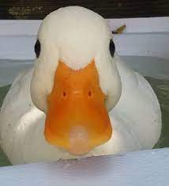

He collected the plastic trash on a daily basis. It never seemed to end. Even if he cleaned the entire beach, more plastic would cover it the next day after the tide had come in. Although it was a futile effort that would never be done, he continued to pick up the trash each day.
There were about twenty people on the dam. Most of them were simply walking and getting exercise. There were a few who were fishing. There was a family who had laid down a blanket and they were having a picnic. It was like this most days and nothing seemed out of the ordinary. The problem was that nobody noticed the water leaking through the dam wall.
It was the first day of the rest of her life. This wasn't the day she was actually born, but she knew that nothing would be the same from this day forward. Although this was a bit scary to her, it was also extremely freeing. Her past was no longer a burden or something that she needed to be concerned about and defend. She threw off the covers keeping her warm in bed, placed her feet over the side of the bed, slipped on her slipper, and took the first step of the first day of her new life.
Twenty-five years Dana had been waiting. She tried to be patient during that time but she hadn't always managed to be as patient as she'd like. But today the opportunity had finally come. The thing she always imagined would make her the happiest person in the world was about to happen. She didn't know why at this specific time she all of a sudden felt sick inside.
All he wanted was a candy bar. It didn't seem like a difficult request to comprehend, but the clerk remained frozen and didn't seem to want to honor the request. It might have had something to do with the gun pointed at his face.
Spending time at national parks can be an exciting adventure, but this wasn't the type of excitement she was hoping to experience. As she contemplated the situation she found herself in, she knew she'd gotten herself in a little more than she bargained for. It wasn't often that she found herself in a tree staring down at a pack of wolves that were looking to make her their next meal.
He picked up the burnt end of the branch and made a mark on the stone. Day 52 if the marks on the stone were accurate. He couldn't be sure. Day and nights had begun to blend together creating confusion, but he knew it was a long time. Much too long.
It was a good idea.

At least, they all thought it was a good idea at the time. Hindsight would reveal that in reality, it was an unbelievably terrible idea, but it would take another week for them to understand that. Right now, at this very moment. they all agreed that it was the perfect course of action for the current situation.
It probably seemed trivial to most people, but it mattered to Tracey. She wasn't sure why it mattered so much to her, but she understood deep within her being that it mattered to her. So for the 365th day in a row, Tracey sat down to eat pancakes for breakfast.
The wolves stopped in their tracks, sizing up the mother and her cubs. It had been over a week since their last meal and they were getting desperate. The cubs would make a good meal, but there were high risks taking on the mother Grizzly. A decision had to be made and the wrong choice could signal the end of the pack.
Green vines attached to the trunk of the tree had wound themselves toward the top of the canopy. Ants used the vine as their private highway, avoiding all the creases and crags of the bark, to freely move at top speed from top to bottom or bottom to top depending on their current chore. At least this was the way it was supposed to be. Something had damaged the vine overnight halfway up the tree leaving a gap in the once pristine ant highway.
The trees, therefore, must be such old and primitive techniques that they thought nothing of them, deeming them so inconsequential that even savages like us would know of them and not be suspicious. At that, they probably didn't have too much time after they detected us orbiting and intending to land. And if that were true, there could be only one place where their civilization was hidden.
Where do they get a random paragraph?" he wondered as he clicked the generate button. Do they just write a random paragraph or do they get it somewhere? At that moment he read the random paragraph and realized it was about random paragraphs and his world would never be the same.
Benny was tired. Not the normal every day tired from a hard day o work. The exhausted type of tired where you're surprised your body can even move. All he wanted to do was sit in front of the TV, put his feet up on the coffee table, and drink a beer. The only issue was that he had forgotten where he lived.
The bowl was filled with fruit. It seemed to be an overabundance of strawberries, but it also included blueberries, raspberries, grapes, and banana slices. This was the meal Sarah had every morning to start her day since she could remember.
click
Why she decided to add chocolate as an option today was still a bit of a surprise, but she had been in the process of deciding she wanted to change her routine. This was a baby step to begin that start.
There was a time in his life when her rudeness would have set him over the edge. He would have raised his voice and demanded to speak to the manager. That was no longer the case. He barely reacted at all, letting the rudeness melt away without saying a word back to her. He had been around long enough to know where rudeness came from and how unhappy the person must be to act in that way. All he could do was feel pity and be happy that he didn't feel the way she did to lash out like that.
Sometimes it's the first moment of the day that catches you off guard. That's what Wendy was thinking. She opened her window to see fire engines screeching down the street. While this wasn't something completely unheard of, it also wasn't normal. It was a sure sign of what was going to happen that day. She could feel it in her bones and it wasn't the way she wanted the day to begin.
She's asked the question so many times that she barely listened to the answers anymore. The answers were always the same. Well, not exactly the same, but the same in a general sense. A more accurate description was the answers never surprised her. So, she asked for the 10,000th time, "What's your favorite animal?" But this time was different. When she heard the young boy's answer, she wondered if she had heard him correctly.
Since they are still preserved in the rocks for us to see, they must have been formed quite recently, that is, geologically speaking. What can explain these striations and their common orientation? Did you ever hear about the Great Ice Age or the Pleistocene Epoch? Less than one million years ago, in fact, some 12,000 years ago, an ice sheet many thousands of feet thick rode over Burke Mountain in a southeastward direction. The many boulders frozen to the underside of the ice sheet tended to scratch the rocks over which they rode. The scratches or striations seen in the park rocks were caused by these attached boulders. The ice sheet also plucked and rounded Burke Mountain into the shape it possesses today.
There are different types of secrets. She had held onto plenty of them during her life, but this one was different. She found herself holding onto the worst type. It was the type of secret that could gnaw away at your insides if you didn't tell someone about it, but it could end up getting you killed if you did.